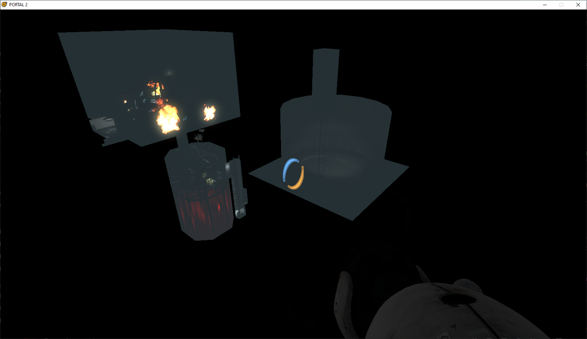

Frankencube replaces Aquarium
The pinned December record says Aquarium Core was replaced with Frankencube in 852_7.
PSBR ↗ · community discussion, not an official build changelog
Separate December revision. PSBR distinguishes it from 852_6 by the Frankencube replacement and the first retail-like interface iteration.
The pinned December record says Aquarium Core was replaced with Frankencube in 852_7.
PSBR ↗ · community discussion, not an official build changelog
PSBR identifies December 2 as the first iteration of the eventual release-style UI.
PSBR ↗ · community discussion, not an official build changelog
A PSBR researcher reports that December 2 lacks the turret opera ending and outdoors sequence present in December 1.
PSBR ↗ · community discussion, not an official build changelog
852_7 is the December 2 depot. Despite its close date, it is a distinct revision from December 1's 852_6.
PSBR comparisons distinguish Aquarium Core material in 852_6 from the developing Frankencube replacement and later presentation in 852_7.
Researchers describe a version of the menu closer to the retail presentation while story scenes still relied on unfinished assets.
No independently verified direct standalone 852_7 mirror was established in the supplied records. The GoFile link marked December 2010 in PSBR corresponds to 852_6.
These descriptions are grounded in PSBR/VCC exported research and era-specific video, rather than official Valve patch notes. The dated Hidden Palace prototype record ↗ gives depot context. Related video footage is labeled when exact attribution cannot be established.
Images below are direct references from the supplied Discord exports, not generated artwork. Signed Discord media links can expire; use the source-message links if a preview stops loading.
